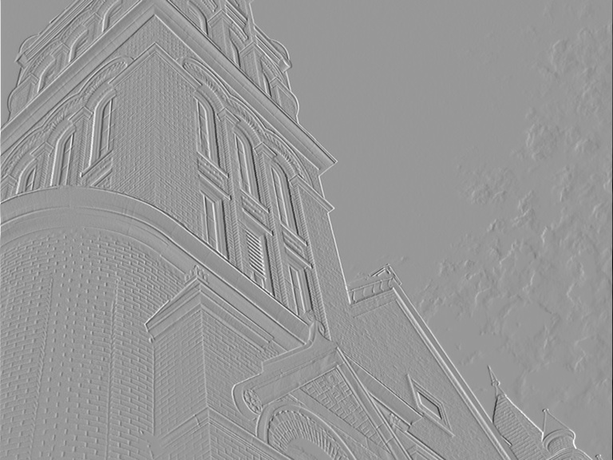
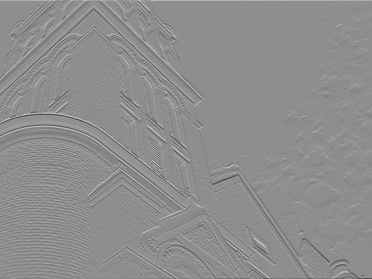
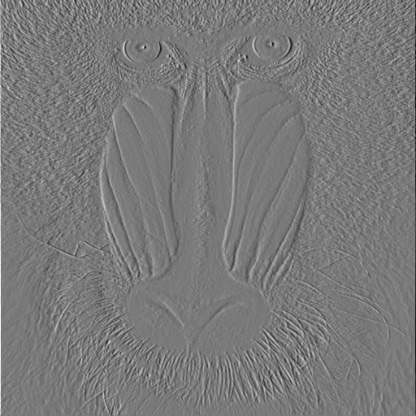
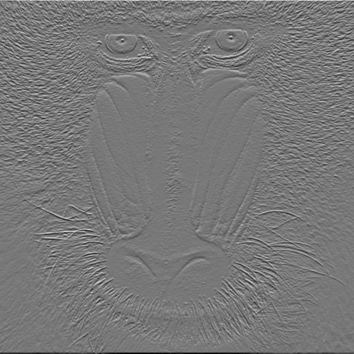
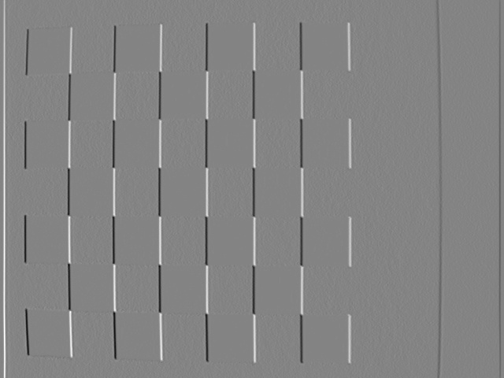
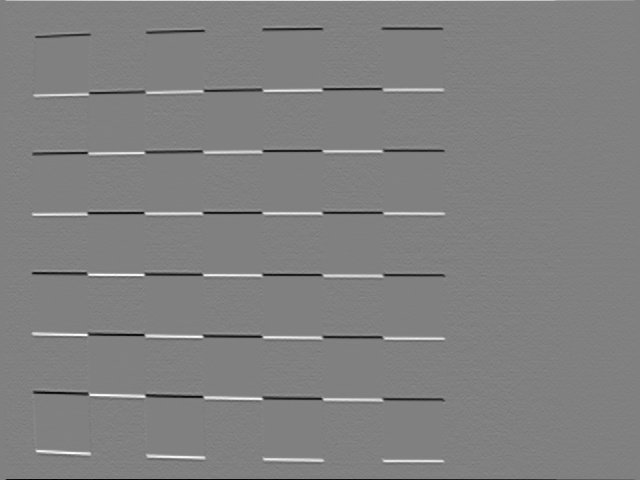
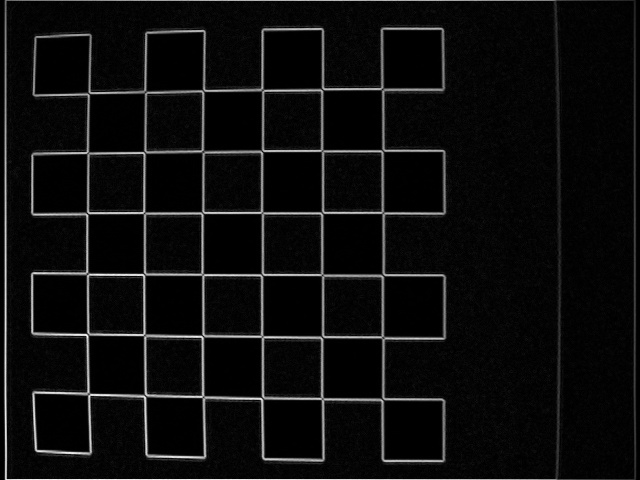
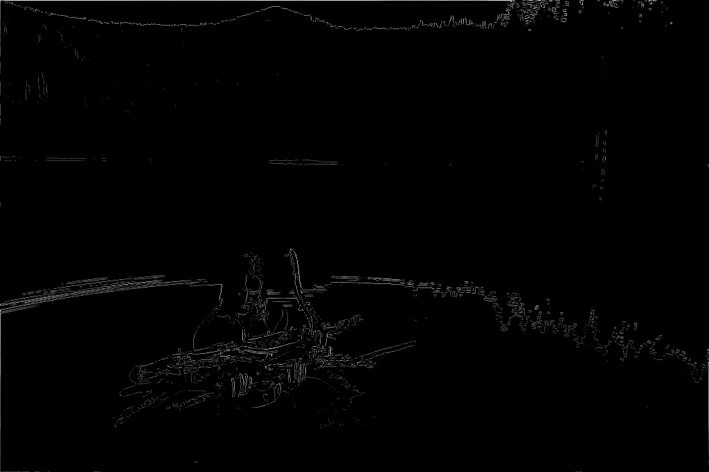

Edge - Successful edge detection depends on the particulars of the input image and the sigma used. For constant sigma, certain images (those with sudden intensity changes) show edges best. See checkers.jpg below. A smaller sigma removes fewer frequencies, resulting in more edges (and noise!) appearing. In other words, increasing sigma retains "stronger" edges.
Corner - The same sigma findings apply to corner detection. Furthermore, we have a new parameter: chain thresholds. Higher thresholds = fewer detected points.
|  |  | |
Horizontal Gradient, sigma = 0.5 |
Vertical Gradient, sigma = 0.5 |
Gradient Magnitude, sigma = 0.5 |
|  |  | |
Horizontal Gradient, sigma = 0.5 |
Vertical Gradient, sigma = 0.5 |
Gradient Magnitude, sigma = 0.5 |
|  |  |  |
Horizontal Gradient, sigma = 0.5 |
Vertical Gradient, sigma = 0.5 |
Gradient Magnitude, sigma = 0.5 |
sigma = 1.0 |
sigma = 0.5 |
|
sigma = 1.0 |
sigma = 0.5 |
Building, sigma = 0.5 |
Checkers, sigma = 0.5 |
Mandrill, sigma = 0.5 |
Mandrill, threshold_low = 0.01, sigma = 0.5 |
Mandrill, threshold_low = 0.02, sigma = 0.5 |
Mandrill, threshold_low = 0.04, sigma = 0.5 |
|  |